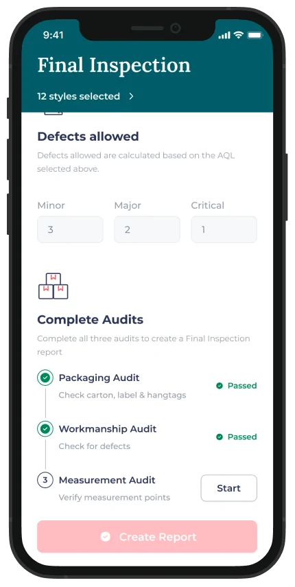
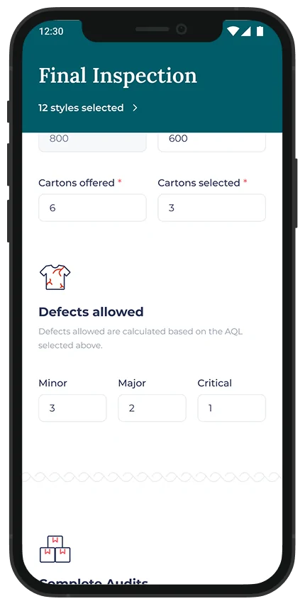
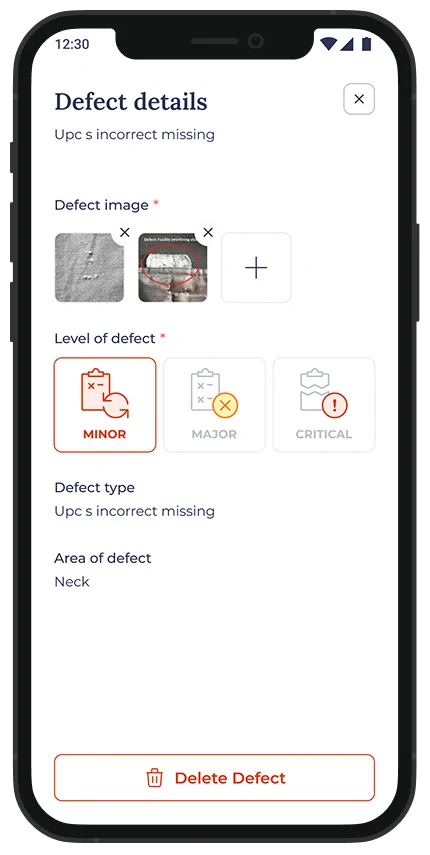
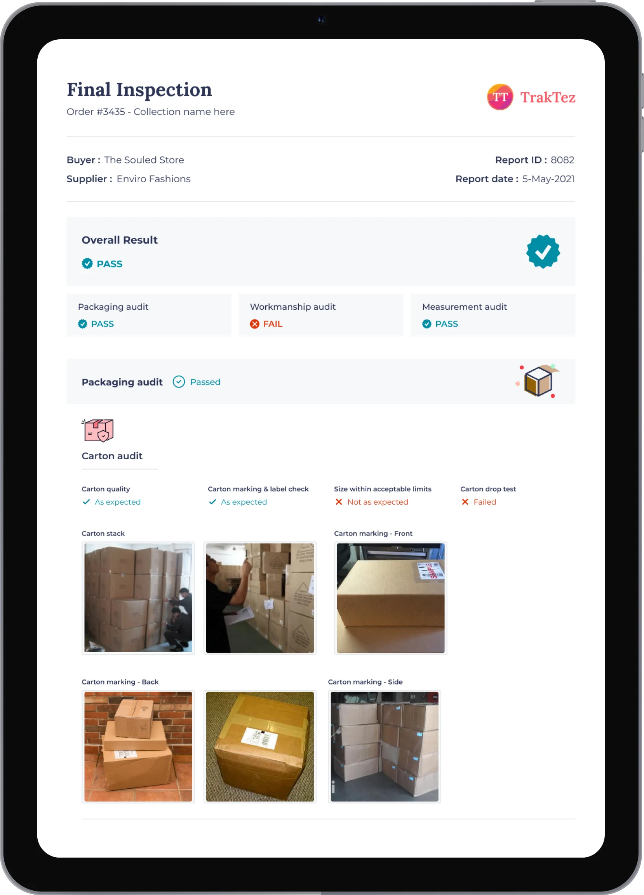
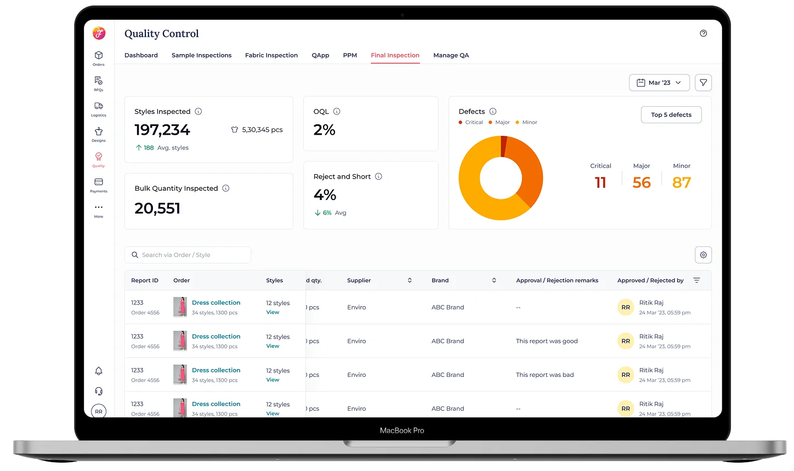
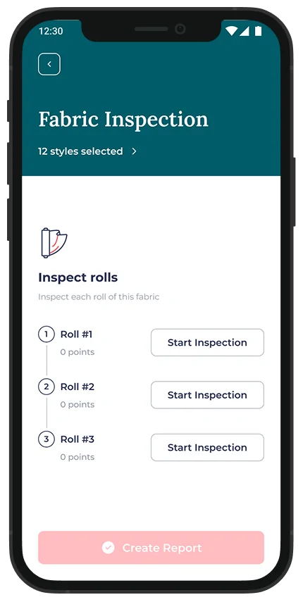

the passed without being inspected problem
a whole shipment passed or failed on three audits, and the system could not tell a real audit from a checkbox. i designed the app that made every inspection leave its evidence behind.
audit steps closed on a typed number. the inspection report was an optional upload.
a native inspection app where the audit is the report, and the report closes the step.
shipment failures fell from over 20% to about 7% within three months.
the stakes
fashinza sat between brands and factories. every order ran on a long plan of steps we called the tna, from request to receipt, and near the end of it sits one decision that gates everything: final inspection. three audits, packaging, measurement and workmanship, and the whole shipment passes or fails.
- rfq
- samples
- order and tna
- bom and fabric
- fabric inspection
- cutting and stitchingq-app, on the line
- finishing and packing
- final inspectionthe gate
- delivery
- grn
the system could record that plan but never verify it. every tna step took a number. finishing packing on a 500-piece style meant typing 250, and the step went partially complete. audit steps closed the same way, or on a report someone uploaded if they felt like it. when an order broke, nobody could reconstruct what had actually been checked.
whoever inspects, the record stands on its own
fashinza did not choose the inspectors. every factory defined its own users and ran its own inspections. so the design could not rely on trusting the person holding the device. it had to make the record itself hard to argue with.



- the standard is built inaql decides how many pieces to check and how many minor, major and critical defects a shipment can carry. the app applies it, instead of relying on each inspector's memory of it.
- photos are the evidenceevery audit captures images. a verdict with photos behind it is something a merchandiser in another city can review.
- workmanship firststitching and cutting defects are checked before anything else, because that is where most shipments fail.
the report nobody has to write
i had already learned this one the hard way. in 2022 i shipped a ppm report that asked merchandisers for fifteen minutes of form-filling per report. they hated it, and it failed. a report that costs people time does not get filled in honestly, or at all.
so final inspection has no report to fill in. the audit is the report. finishing an inspection generates a standard pdf: who inspected, what they checked, what they found, with the photos. that report closes the tna step on its own. the mobile app stopped being a companion to the web tool and became its source of truth.
tracing a broken order became opening the step and reading a couple of reports.

built for the floor it runs on
factories are big and the signal is not guaranteed. every inspection is stored on the device and syncs the moment the connection comes back.
the people doing the work are literate, but often in neither english nor hindi. the app runs in english, hindi, bengali, kannada and tamil.
floor managers, owners and merchandisers walk the factory all day, so the app opened to them too. web-only did not fit how they work.
i designed the quality dashboards sitting with merchandisers in factories. what they needed to see, and in what order, came from watching them work.

the same pattern, on a harder problem
fabric inspection came next, and it was harder: every roll of fabric needs a different inspection pattern. the structure held. audit as evidence, report as a by-product, the step closed by the result.

how it landed
before the app, more than one shipment in five failed final inspection. two to three months after it went live, it was about one in fourteen. production takes 30 to 45 days, so that is the earliest honest read, and it rests on the 10 to 20 orders that shipped in that window. a small sample, and i state it as one.
it is also not this app's number alone. q-app was cutting workmanship defects on the line in the same period, and final inspection is where that showed up. the two were designed to work as a pair.
the app enforces the process. it cannot enforce honesty. it just makes dishonesty leave a record.
you have read my account. there is another one.
read claude's take on this